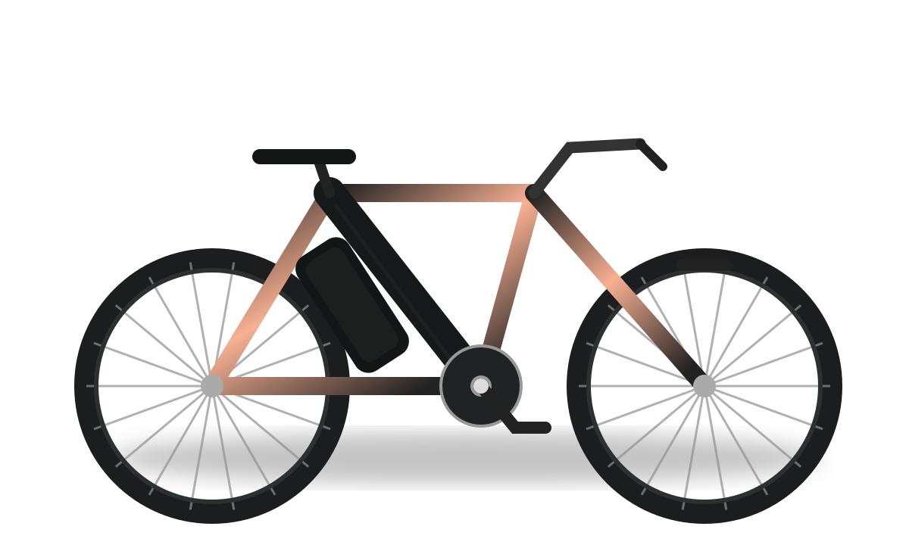
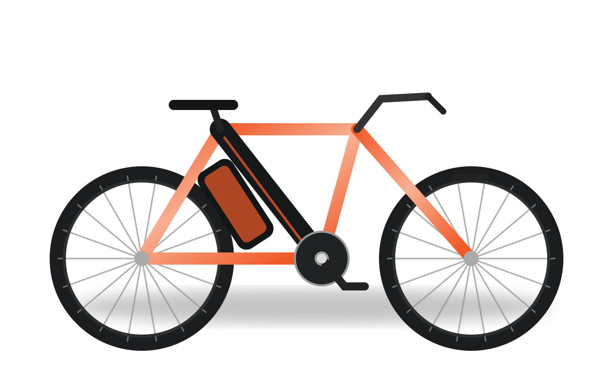
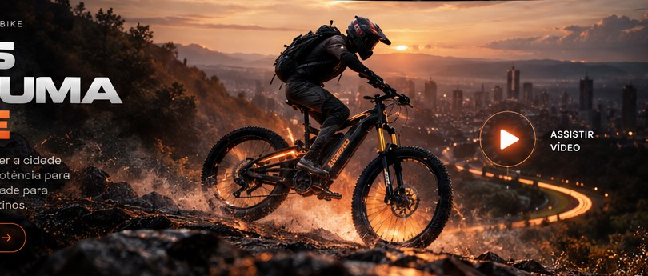
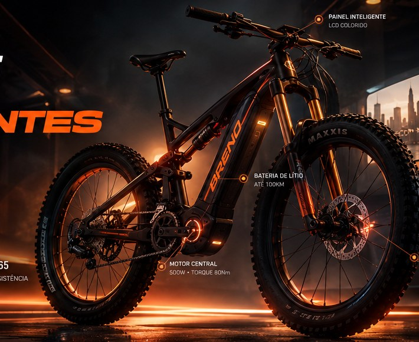
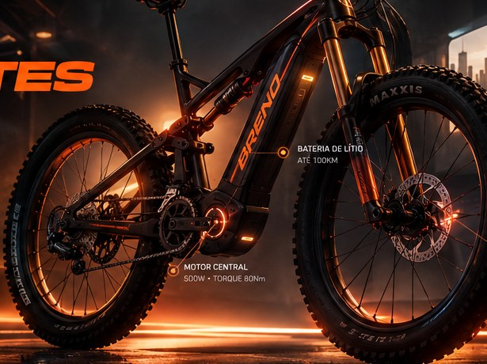
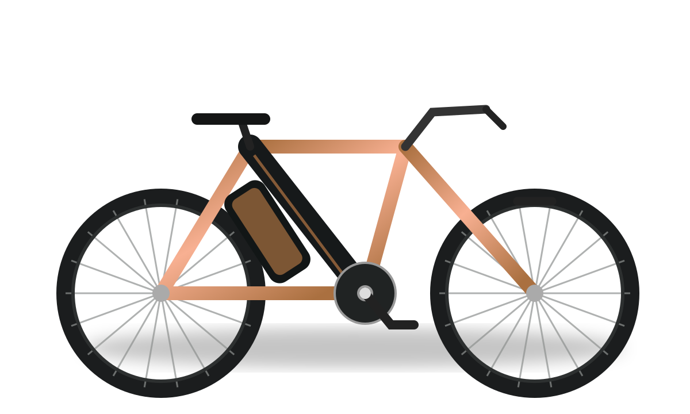

01 / 03

URBAN SERIESCIDADE / LIBERDADE
A CIDADE É SUA. O CAMINHO TAMBÉM.
UMA NOVA FORMA DE IR
Menos limites. Mais possibilidades. Um novo olhar sobre cada trajeto — da rotina aos caminhos que você ainda não explorou.
EXPLORE O UNIVERSO ↗DESIGN / ENERGIA / LIBERDADEA ENGENHARIA DO MOVIMENTO
Explore os componentes de uma bicicleta elétrica em uma visualização técnica interativa. Toque nos pontos para descobrir o que move a experiência.

EXPLORAÇÃO TÉCNICA
O coração da assistência elétrica. Uma solução pensada para tornar a experiência de pedalar mais fluida.
ESQUEMA ILUSTRATIVO • NÃO É FICHA TÉCNICA OFICIALCAPÍTULO 01 — ENERGIA
Cada movimento começa com uma decisão: escolher o seu próprio caminho.
Para quem não nasceu para seguir o fluxo. Para quem escolhe criar o próprio ritmo.
CONHEÇA O CONCEITO ↗Linhas precisas. Presença marcante. Uma visão de mobilidade elétrica feita para quem enxerga a cidade de outro jeito.
DESCUBRA A COLEÇÃO ↗PERSONALIZE A EXPERIÊNCIA
Experimente diferentes acabamentos e estilos nesta visualização conceitual da coleção elétrica.
VER A COLEÇÃO ↗
Uma nova atitude sobre duas rodas. Design que provoca. Energia que acompanha. Liberdade para escrever a própria rota.
CONHEÇA OS MODELOS ↗Explore diferentes perspectivas da nossa campanha conceitual.


Três maneiras de imaginar a mobilidade elétrica. Explore os estilos desta coleção conceitual.

URBAN SERIES
ADVENTURE SERIESModelos, imagens e características apresentados apenas para demonstração criativa. Não representam estoque ou ofertas oficiais da Breno Bike.
Uma experiência digital que responde à sua energia. Escolha o modo e veja o universo mudar.
PRONTO PARA O PRÓXIMO MOVIMENTO?
Conceito não oficial criado para portfólio. Confirme o perfil e as informações comerciais com a empresa antes de publicar como site oficial.